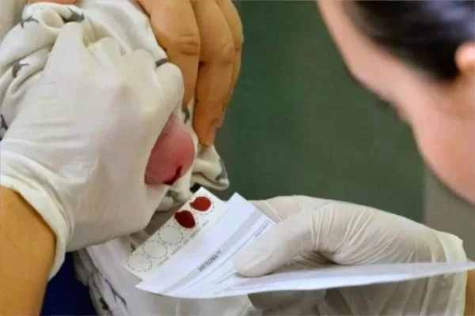
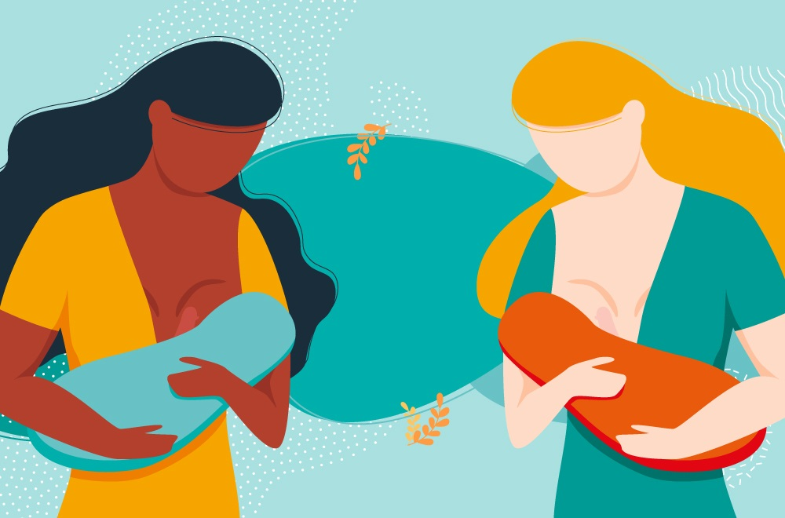

MAIS LIDOS
Agosto dourado: a importância da amamentação para mãe e bebê
10/08/2023
Depressão pós-parto - os principais sintomas e os fatores de risco
10/08/2023
ARTIGOS MAIS RECENTES

Além do teste do pezinho - exames e vacinas importantes para bebês
10/08/2023
Autor: Raquel Valente - Metrópoles
Alguns testes devem ser feitos nos primeiros dias de vida para prevenir problemas de saúde. Também é importante iniciar a vacinação. Quando um bebê nasce, é importante que seja iniciado o acompanhamento de sua saúde logo nos primeiros dias de vida. Isso inclui a realização de exames preventivos e a aplicação de vacinas.
Leia Mais

Consultora de amamentação: você sabe o que é e para que serve?
10/08/2023
Autor: Portal Beep
A consultora de amamentação tem o dever de proteger, promover e apoiar o aleitamento materno. Ela presta serviços às clientes, fornecendo cuidados no momento da amamentação, por meio de estudos de história clínica, avaliação da mãe/lactante, do bebê e da dupla. A consultora ajuda no desenvolvimento de um plano de ação a partir das metas de amamentação da família, aconselhamento sobre o uso de dispositivos e técnicas de apoio à nutrição do bebê. Tudo isso pode ser feito em todas as etapas da lactação: durante a gestação, no pós-parto, na volta ao trabalho e até mesmo no processo de desmame.”
Leia Mais